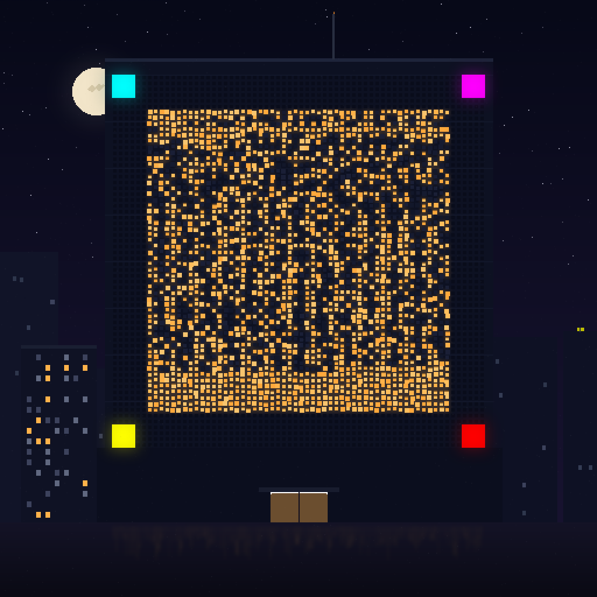
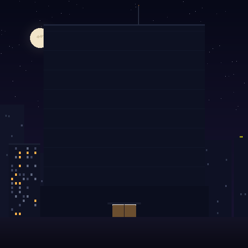

The lit windows of this skyscraper are the certificate.
Piece #12 hid the seal in a neon sign. Piece #13 goes one level deeper: the tower's window grid itself is a palette-shifted SV-0001 matrix — amber-on-navy instead of black-on-white, because the decoder thresholds on luminance, not color. The four corner beacons are the anchors. And a 104-byte treasure shard hides invisibly in the PNG's least-significant bits.

What the windows say
{
"collection": "night-districts",
"piece": 13,
"supply": 100,
"traits": {"weather":"clear","district":"shinjuku",
"palette":"amber-gold","sign":"window-grid"},
"rarity_rank": 4,
"art": "3516a550d162f02e"
}
Signed by the studio key (demo): 038e2cb0…6538 · action 0xA47C (ART CERT) · target NFT1. Decode it yourself with the scanner.
Verified by two independent implementations
Python reference decoder
[png] sig: VALID cert: MATCH [jpg] sig: VALID cert: MATCH lsb shard: OK (104 bytes)
JavaScript site decoder
9 passed, 0 failed signature VALID · action 0xA47C target NFT1 · traits ✓ · art hash ✓
The JPEG is the Instagram test: recompressed at quality 80, the certificate still decodes byte-exact. The LSB shard survives only as PNG — recompression erases it, which is exactly the hunter/viewer split.

The city underneath — hash 3516a550d162f02e
The sealed artwork — the windows carry the signed cert
How hidden can a scannable code get?
Tier I — Billboard (#12)
The code is the scene's centerpiece. Impossible to miss, trivial to scan, works after any recompression. Loud by design — the seal as a hanko stamp.
Tier II — Texture (this piece)
The code becomes a texture: lit windows, palette-shifted into the scene. A casual viewer sees a building; an attentive one spots the grid. Physics sets the floor: 2,704 binary cells will always read as some pattern.
Tier III — Stego (the shard)
Truly invisible: 104 bytes in the PNG's least-significant bits. Not camera-scannable — hunters extract it with tools. Dies under JPEG. This is where prizes live.
Next tier, untested: diegetic shrink — the seal as a small poster or sticker inside a pure-art scene, where "a poster with a funky design" hides in plain sight.
Two channels, one artwork
1 · For everyone
Point a phone at the building: collection, edition, traits, rarity, artist signature. No spreadsheet, no metadata server, no marketplace API.
2 · For hunters
The LSB shard is the first of three: "shard 1 of 3 · facade-13 · the other two signs hang elsewhere in the district". Three pieces, three shards, one prize.
3 · Forever
The cert verifies offline against math, and ownership verifies online against the chain. Copies of the file are self-labeling posters, not stolen originals.